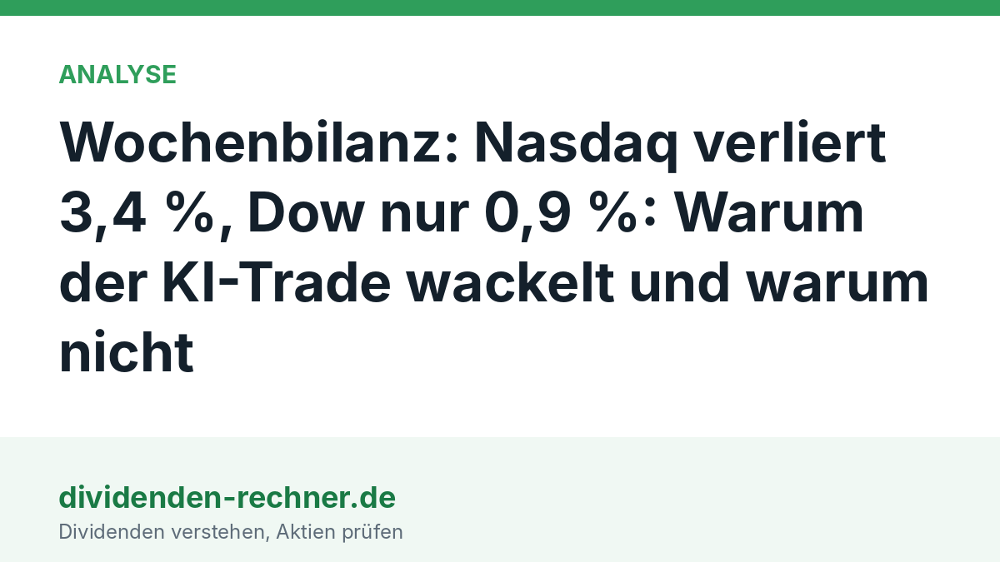

Analyse
Wochenbilanz: Nasdaq verliert 3,4 %, Dow nur 0,9 %: Warum der KI-Trade wackelt und warum nicht
Die schlechteste Börsenwoche seit Juni trifft vor allem Chip- und KI-Werte. Die Gründe für den Rücksetzer, die Argumente gegen eine Wende im KI-Boom und was die Woche für Dividendenanleger bedeutet.

Kurz gesagt
Nasdaq Composite: −3,4 % in der Woche S&P 500: −2,7 % in der Woche Dow Jones: −0,9 % in der Woche
- Verlauf: Am Mittwoch springt der Dow nach der Kongresswahl um 3 %, am Donnerstag verliert der Nasdaq 5,5 %, am Freitag erholen sich die Chipwerte teilweise. S&P 500 und Nasdaq erleben ihre schwächste Woche seit Juni.
- Der Streitpunkt: Anleger fürchten, dass eine demokratische Mehrheit im Kongress den Bau von KI-Rechenzentren bremst. Dagegen sprechen die Investitionspläne der großen Cloud-Konzerne und die Einschätzung vieler Analysten, es gehe um eine zeitliche Verschiebung des Ausbaus.
- Für Dividendenanleger: Die Standardwerte im Dow hielten sich besser als die Technologie. Mehrere Dividendenzahler erhöhten in dieser Woche ihre Ausschüttung. Die Zinsen bleiben die große Unbekannte, denn der Markt rechnet mit einer Zinserhöhung im Dezember.
Eine Woche in drei Akten
Der Wochenstart verlief ruhig. Rechnerisch lag der S&P 500 am Dienstag mit rund 7.569 Punkten praktisch auf dem Niveau vom Freitag davor. Der Ölpreis fiel zu Wochenbeginn kräftig, im Raum steht eine mögliche Annäherung der USA an den Iran. Brent rutschte bis Freitag unter 100 Dollar, vor einer Woche standen noch rund 112 Dollar im Kurs.
Mittwoch, 4. November: Nach der Kongresswahl, bei der die Demokraten beide Kammern gewannen, sprang der Dow Jones um 1.569 Punkte oder 3 % auf 53.356 Punkte. Der S&P 500 legte 1,6 % zu, der Nasdaq 1,4 %. Zu den Gewinnern zählten Krankenhausbetreiber und Händler, die Kunden mit kleineren Einkommen bedienen, so die Auswertung der Nachrichtenagentur AP. Gleichzeitig lag schon an diesem Tag ein Schatten auf den KI-Werten: Micron verlor etwa 6 %, Quanta Services als Zulieferer für Stromnetze rund 12 %.
Donnerstag, 5. November: Dann kippte die Stimmung. Der Nasdaq Composite verlor 5,5 %, der S&P 500 4,4 %, und der Dow gab 1.833 Punkte ab. Es war für S&P 500 und Nasdaq der schwächste Handelstag seit April 2025. Alle elf Sektoren des S&P 500 schlossen im Minus, am stärksten traf es die Firmen, die den KI-Ausbau beliefern.
Freitag, 6. November: Der Nasdaq gewann 1,1 %, der S&P 500 0,3 %, der Dow gab 0,5 % nach. Der US-Arbeitsmarktbericht fiel stark aus: Die Wirtschaft schuf im Oktober 165.000 Stellen, erwartet hatte der Markt gut 60.000, die Arbeitslosenquote sank auf 4,1 %. Das hilft der Konjunktur, nährt aber die Sorge vor höheren Zinsen.

Warum der KI-Trade wackelt
Die Politik. Die Demokraten haben nach den Berichten auch in Bundesstaaten gewonnen, in denen viele Rechenzentren entstehen, etwa in Texas. Steigende Strompreise sind dort ein Wahlkampfthema, und neue Rechenzentren gelten vielen Wählern als Preistreiber. Die UBS rechnet laut Finimize damit, dass rund 30 % der für 2028 erwarteten neuen Rechenzentrumskapazität in den USA gefährdet sind, allein in Texas geht es um 18 Gigawatt. Gesetze gibt es bisher nicht, die Sorge gilt möglichen Auflagen und höheren Kosten für den Netzanschluss.
Die Stimmung. Schon in der Woche davor hatten Alphabet, Amazon und Intel enttäuscht, in dieser Woche folgten schwächere Ausblicke von Apple und Palantir sowie ein Umsatz von Shopify unter den Erwartungen. Eine Umfrage der Universität Michigan zeigt, dass Verbraucher die Sorge vor einer KI-Blase häufiger nennen. In Asien fiel der südkoreanische Kospi am Freitag um mehr als 6 %, der japanische Nikkei 225 rutschte laut CNBC in einen Bärenmarkt.
Die Zinsen. Laut CME FedWatch sieht der Markt die Wahrscheinlichkeit einer Zinserhöhung am 9. Dezember bei über 65 %. Hohe Zinsen drücken Bewertungen von Wachstumsaktien, deren Gewinne weit in der Zukunft liegen. Nach dem starken Arbeitsmarktbericht stiegen die Renditen am Freitag.
Die Bewertung. Nach einem langen Anstieg war viel Gutes eingepreist. Dass Nvidia mit dem Verlust vom Donnerstag unter den Schlusskurs von Ende 2025 fiel, zeigt, wie dünn der Jahresgewinn vieler KI-Werte geworden war. Am Freitag kletterte die Aktie wieder darüber.
Warum er nicht wackelt
Die Investitionen laufen weiter. Nach Berechnungen von Business Insider gaben die großen Cloud-Konzerne im dritten Quartal rund 227 Milliarden Dollar für Investitionen aus, für das Gesamtjahr 2026 werden 803 bis 828 Milliarden Dollar erwartet. Amazon rechnet für 2027 mit „deutlich mehr“ Ausgaben, Alphabet erwartet laut CFO einen deutlichen Anstieg. Wer Rechenzentren bauen will, hat das Geld eingeplant.
Verschiebung statt Absage. Die UBS beschreibt laut Finimize die Gefahr als Zeitfrage: Ausgaben könnten von 2027 nach 2028 rutschen. Die Bank erwartet keinen schnellen Rückgang der Nachfrage nach KI und Cloud. Jane Gibbons von Jefferies sieht im Ausverkauf laut CNBC eine Reaktion auf die Wahl und keinen grundlegenden Neustart (sinngemäß aus dem Englischen).
Die Auftragsbücher sind voll. Quanta Services meldete vor einer Woche einen Rekord-Auftragsbestand von 63,7 Milliarden Dollar. Beim Speicherhersteller Micron sind laut TIKR über 75 % der Produktion des Jahres 2027 bereits fest zugesagt. Lam Research genehmigte einen Aktienrückkauf über 25 Milliarden Dollar, ein Signal, dass das Management die Lage gelassener sieht als der Markt.
Die Erholung kam sofort. Acht große Chipwerte holten am Freitag im Schnitt mehr als ein Drittel der Donnerstagsverluste wieder auf, bei Intel waren es zwei Drittel, bei Broadcom nur 6 %. Auch Präsident Trump bekräftigte laut CNBC seine Unterstützung für den KI-Ausbau.

Ein Tag der Erholung entscheidet nichts. Die Korrektur kann weitergehen, wenn die Inflationszahlen am Dienstag hoch ausfallen oder aus den Bundesstaaten konkrete Auflagen für Rechenzentren kommen. Beide Lager haben Argumente, und der Markt entscheidet im Wochentakt neu, welche er gerade höher gewichtet.
Was die Woche für Dividendenanleger bedeutet
Der Dow Jones mit seinen Standardwerten verlor in der Woche nur 0,9 %, der Nasdaq 3,4 %. Für Anleger mit Fokus auf Ausschüttungen war die Woche damit weniger dramatisch als die Schlagzeilen. Das ist eine Beschreibung der Woche und keine Garantie, denn auch Dividendentitel können fallen.
Mehrere Unternehmen meldeten in diesen Tagen höhere Ausschüttungen. Simon Property Group erhöht die Quartalsdividende auf 2,30 US-Dollar, Regency Centers um 6 % auf 0,80 US-Dollar. Beide sind Immobiliengesellschaften mit Einkaufszentren, also Werte, die auf Zinsänderungen empfindlich reagieren. Lam Research zahlt 0,33 US-Dollar je Aktie und stockt den Rückkauf auf. Der Pipelinekonzern Enbridge hat die Dividende nach eigenen Angaben 31 Jahre in Folge angehoben. Versorger wie Con Edison und PPL lieferten solide Quartalszahlen. Gerade Stromversorger stehen im Zentrum der Debatte: Der Strombedarf der Rechenzentren ist ihr Wachstumstreiber, zugleich wächst der politische Druck auf die Strompreise.
Die wichtigste Zahl für Dividendenjäger ist die Rendite zehnjähriger US-Staatsanleihen, die am Donnerstag bei rund 4,84 % lag. Solange sichere Anleihen so viel abwerfen, müssen Dividendenaktien mit Wachstum oder Dividendensteigerung überzeugen. Wie Anleihen funktionieren und was die UBS dazu sagt, lesen Sie in unserem Beitrag zum Thema.
Die Woche im Überblick
- Dow Jones: −0,9 %, Mittwochsschluss 53.356 Punkte, Donnerstag −1.833 Punkte
- S&P 500: −2,7 %, schwächste Woche seit Juni
- Nasdaq Composite: −3,4 %, am Donnerstag −5,5 %
- Russell 2000: −2,1 %
- Termine: Dienstag, 10. November, US-Inflationszahlen für Oktober, Freitag, 13. November, Erzeugerpreise
Quellen
- Alain Guillot, „Stock Market Recap, November 6, 2026“ (Indexdaten von AP und Investing.com)
- CNBC über StockTitan, „The Stock Market Today Live, November 6, 2026“ (Chipwerte, Arbeitsmarkt, Zinserwartung, Zitat Jefferies)
- Finimize, „UBS flags a post-midterms speed bump for data centers“, 4.11.2026
- TIKR, „Micron sinks 6% as Democratic sweep stokes fears of an AI slowdown in build“, 4.11.2026
- Business Insider über Hargreaves Lansdown, Auswertung der Investitionen großer Cloud-Konzerne, 30.10.2026
- La Nación (AP), „How major US stock indexes fared Wednesday 11/4/2026“
- Trading-Treff, „Nasdaq 100: Wahlergebnis bremst KI-Rally“, 4.11.2026
- Eigene Auswertungen: Unternehmensmeldungen auf Dividenden-Rechner.de
Dieser Beitrag fasst die Berichterstattung der genannten Medien in eigenen Worten zusammen. Kurzzitate sind als solche gekennzeichnet. Die Grafiken sind eigene Darstellungen auf Basis der genannten Daten. Alle Angaben ohne Gewähr.
Hinweis: Dieser Text dient der allgemeinen Information und ist weder Anlage-, Steuer- noch Rechtsberatung. Kapitalanlagen sind mit Risiken verbunden, bis hin zum Totalverlust.